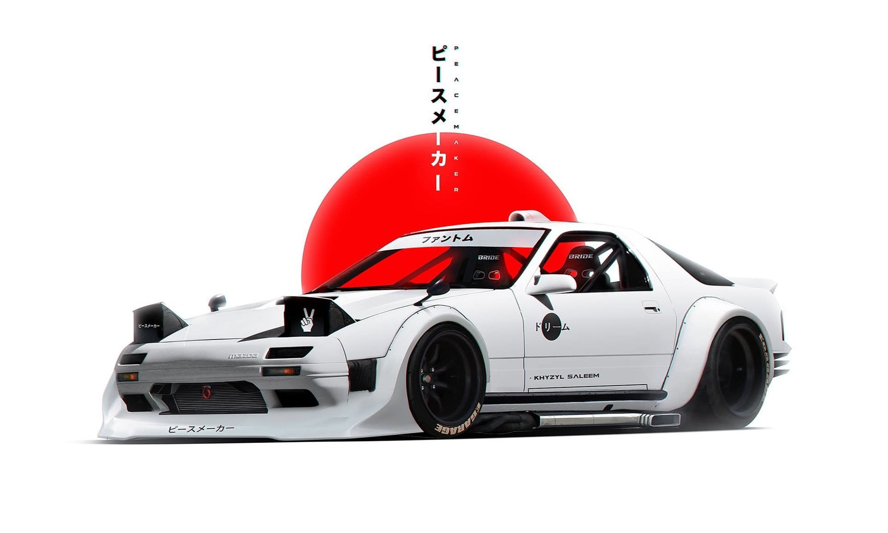

Our Software
Products, surfaces, and systems that stay calm under load.
Platform
Operational AI core
A foundation layer for routing tasks, model responses, and internal workflows with less friction.

Interface
Decision dashboard
A clear command surface for teams that need live signals, operational status, and a focused view of what matters.
Automation
AI ops layer
A lighter system for orchestration, task routing, and reducing operational overhead across the stack.